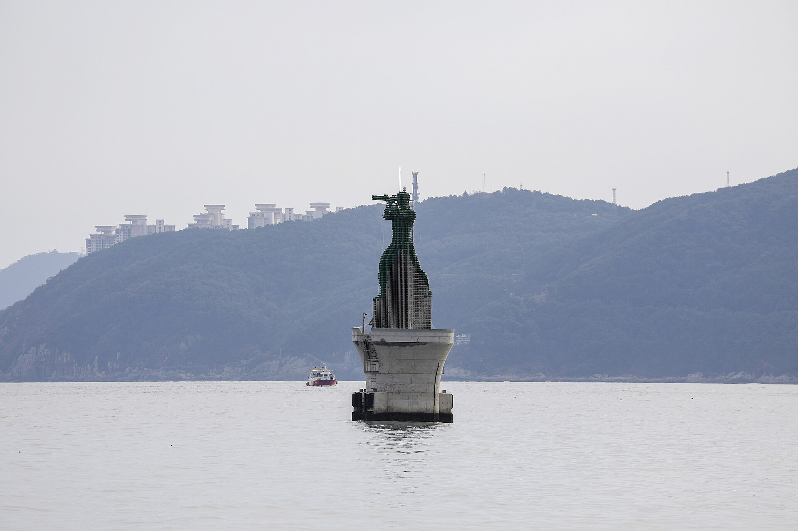
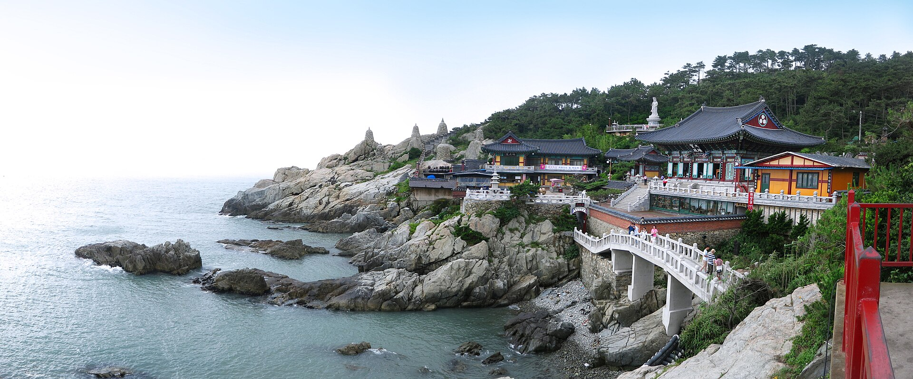
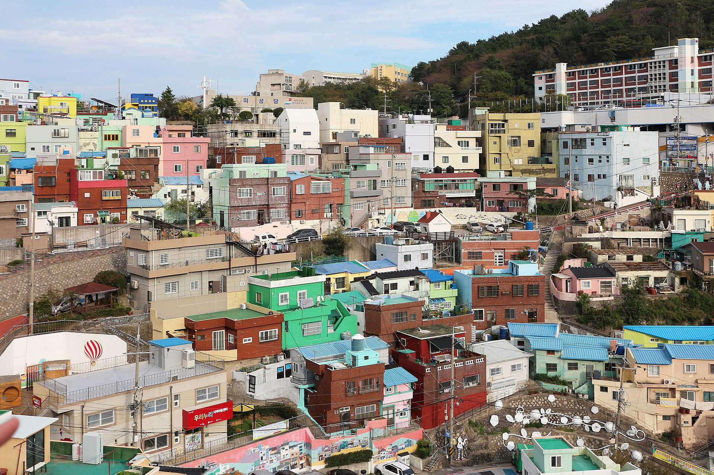
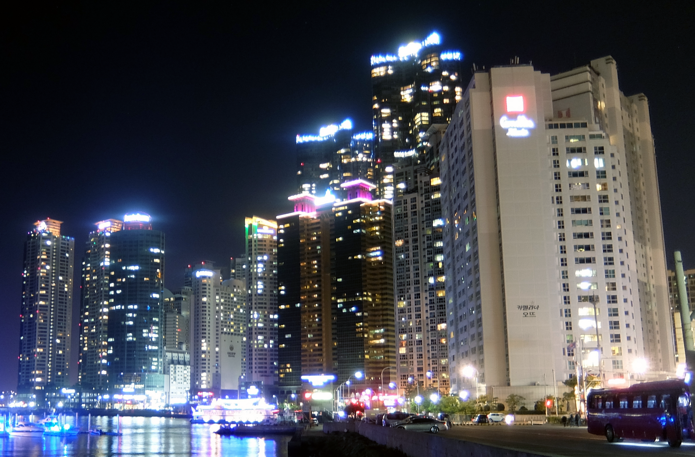

OUTBOUND · 06.28 SUN7C6164
02:50TPE 桃園
濟州航空
06:10PUS 金海
凌晨出發，清晨抵達。第一天安排寄放行李與海雲台慢行，避免過度疲勞。
Trip at a glance
住宿選在海雲台中心，早晨能走去海邊，晚上也有熱鬧街區與餐廳。行程以區域分日，減少來回奔波，也保留雨天與自由調整空間。
Confirmed route
所有時間均為當地時間。回程於 7 月 4 日凌晨抵達桃園。
凌晨出發，清晨抵達。第一天安排寄放行李與海雲台慢行，避免過度疲勞。
退房後寄放行李，白天仍可完整使用；建議 19:00 前抵達金海機場。
航班編號依目前公開時刻資料辨識，購票前仍請以航空公司訂位頁為準。
Six days by the sea
按地理區域安排，每天保留一段可以臨時改變主意的時間。

抵達金海國際機場入境、領行李、購買或儲值交通卡。
前往海雲台輕軌轉地鐵約 70–90 分鐘；行李多可考慮計程車。
飯店寄放行李＋早餐海雲台市場或附近找一碗熱湯。
入住與休息補眠後再出門，讓紅眼班機不拖垮整趟旅行。
海雲台海灘散步傍晚沿沙灘、冬柏島方向慢走。
海雲台市場晚餐第一晚不排預約餐廳，保留體力彈性。
開啟海雲台地圖 ↗
海東龍宮寺早點抵達避開人潮，海岸寺院建議預留 1.5–2 小時。
松亭午餐海鮮、烤貝或豬肉湯飯，依當天胃口選。
Blue Line Park從松亭／青沙浦方向搭海岸列車，天空膠囊需提前訂票。
青沙浦散步雙燈塔、天空步道與海邊咖啡店。
返回海雲台晚餐後可自由逛街或回飯店使用水療設施。
開啟東釜山路線 ↗
甘川文化村上午光線較舒服，穿適合走坡道的鞋。
札嘎其市場海鮮午餐，先確認價格與料理方式再入座。
南浦洞散步BIFF 廣場、光復路、富平罐頭市場。
龍頭山公園視體力決定是否登塔，傍晚後再回海雲台。
開啟西釜山路線 ↗
白淺文化村沿海崖步道散步，雨天改為咖啡店與室內景點。
影島午餐選一間海景餐廳，下午保留咖啡時間。
太宗台或自由時間晴天去太宗台；天候不佳則回市區。
廣安里晚餐與夜景看廣安大橋亮燈，沿海灘散步。
開啟影島至廣安里路線 ↗自由選擇新世界 Centum City／Spa Land，或回訪最喜歡的區域。
咖啡與購物把伴手禮與採買集中在這天，最後一天更輕鬆。
海雲台夕陽可選冬柏島、The Bay 101 或尾浦一帶。
旅行收尾晚餐挑一間最想吃的餐廳，建議提前預約。
海邊早餐最後一次晨間散步，避開正午炎熱。
退房並寄放行李向飯店確認最晚領取時間。
海雲台自由活動午餐、補買伴手禮，不安排跨區行程。
領行李、前往機場預留晚餐、交通與報到緩衝。
抵達金海國際機場辦理 ZE987 報到與托運。
飛往桃園隔日 00:15 抵達。
Our home in Busan
五晚都住海雲台，少搬一次行李，就多一點真正旅行的時間。
Before departure
可點擊勾選，狀態會保存在目前瀏覽器。
Budget frame
機票待填
住宿 5 晚待填
餐飲₩360,000–600,000
當地交通₩100,000–180,000
門票／預約₩120,000–250,000
購物與備用金自行設定
To be continued
回來後，把這裡換成你們真正看見的釜山。
放入兩人的合照
放入最喜歡的一餐
新增照片：將檔案放進 photos/，再依 README 的方式替換相簿圖片。
航班目前辨識為去程 7C6164、回程 ZE987；航空時刻可能調整，請以購票確認信為準。
天氣六月底至七月初可能炎熱、潮濕且有雨。每日行程保留室內備案。
景點營業時間、休館日與票價可能改變；海岸列車與熱門餐廳建議提前預約。